1.1.This design provides textured surfaces to assist visually impaired individuals in navigating their surroundings. The raised dots serve as a tactile guide, alerting individuals to changes in path direction or the presence of intersections, ensuring safety and independence.
1.2.This visual alarm serves individuals who are hearing impaired. In emergencies, such as a fire, the flashing red light provides a non-auditory warning to ensure that everyone, regardless of hearing ability, is aware of the situation and can take necessary action.
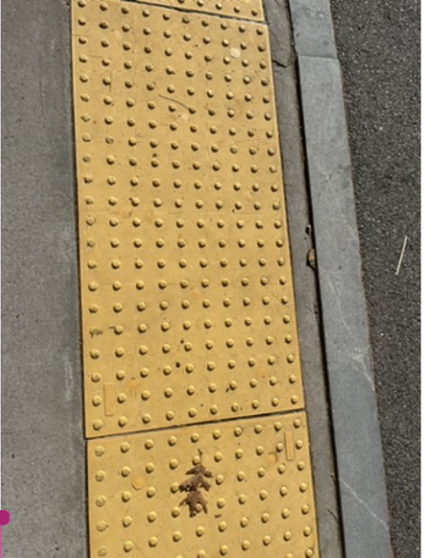
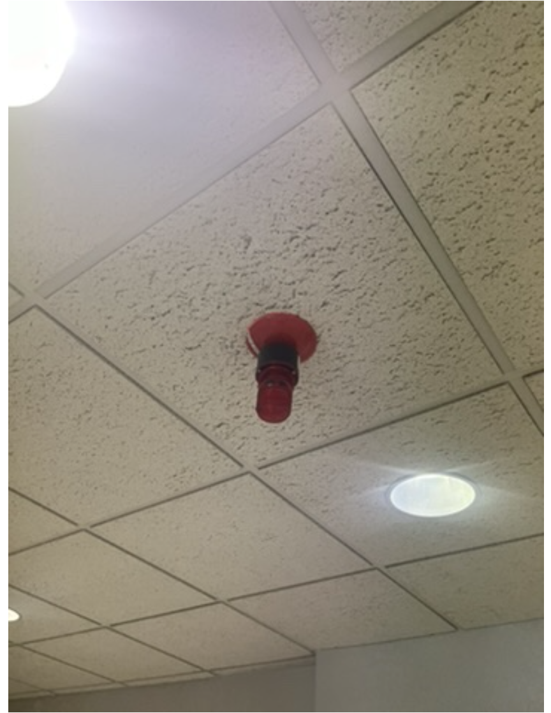
2.1.The yellow strips enhance visibility, making the stairs safer for everyone, particularly those with impaired vision.
2.2. Emergency Assistance Pole: This pole is designed to assist anyone in an emergency, providing a direct line to help. Its tall, brightly colored design ensures it can be easily spotted from a distance, making it accessible to individuals in need of urgent assistance.
2.3. The pedestrian crosswalk button allows pedestrians, including those with limited mobility or children, to activate the crosswalk signal for safer crossing.
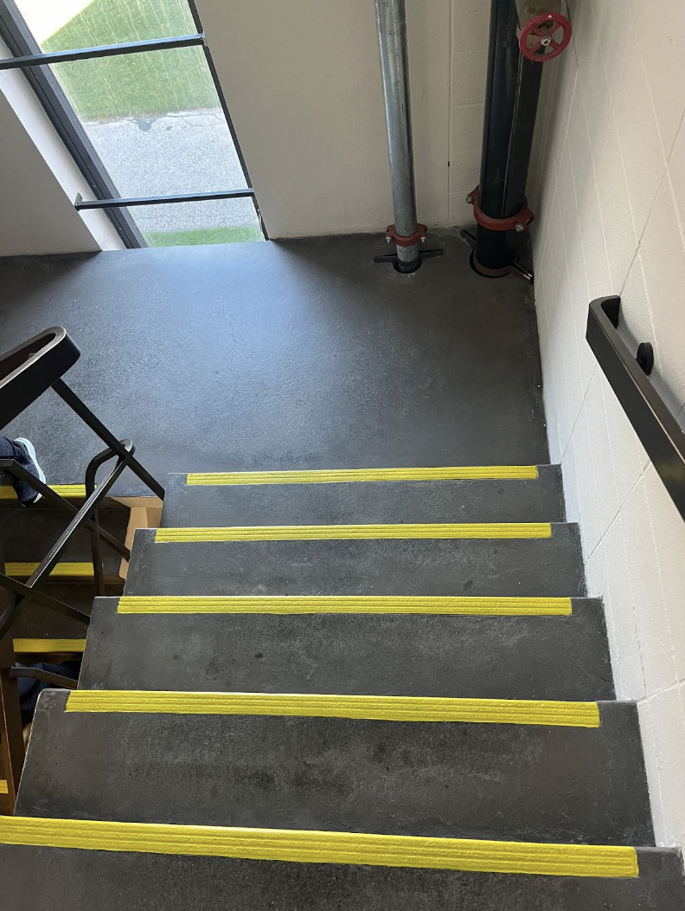
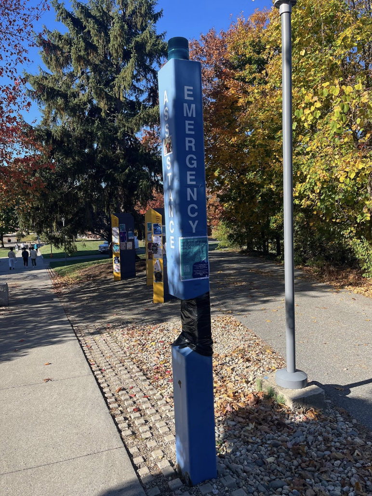
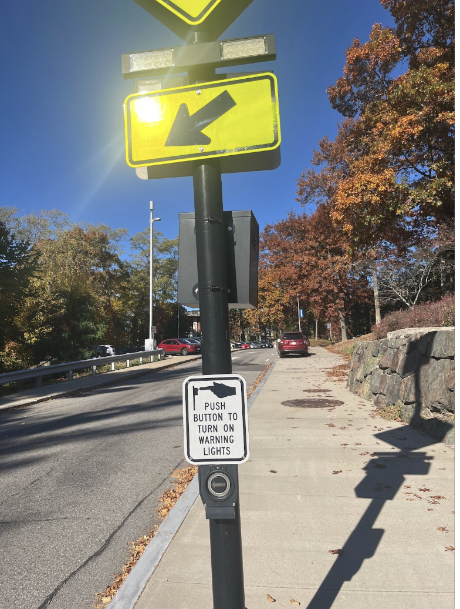
3.1. The sturdy metal handrails alongside the stairs are essential for older adults, providing critical support and stability as they ascend or descend. Handrails reduce the risk of falls and make navigating stairs safer for individuals with reduced strength, balance, or mobility.
3.2. The auomatic door button is an accessibility feature designed for people with mobility challenges, including older adults. It allows them to open heavy doors effortlessly.
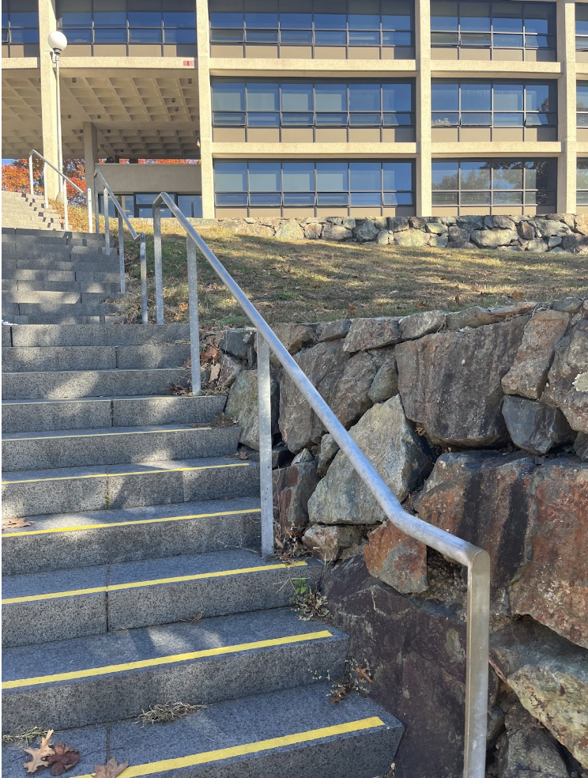
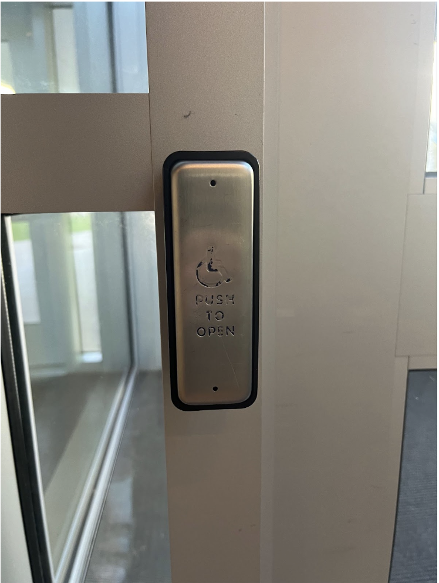
The automatic door button allows kids to open heavy doors independently. Children, especially younger ones, may lack the physical strength to push or pull a standard door. The button makes it easier for them to access buildings without assistance. It is also designed with a height that accommodates both young children and individuals with limited mobility.
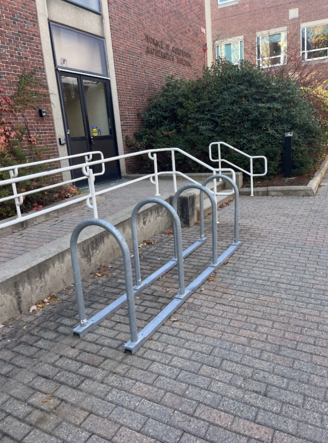
The bike rack and accessible ramp demonstrate evidence of design for wheeled mobile gear by providing designated spaces and smooth transitions for bicycles, wheelchairs, and strollers, ensuring safe and convenient mobility.
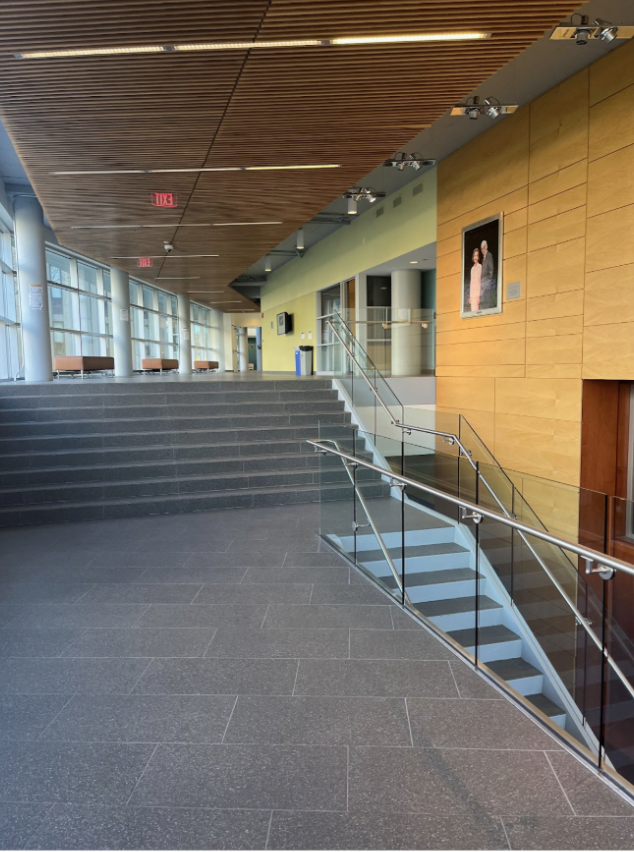
The stairs, without ramp, represent a physical barrier for individuals with mobility challenges.
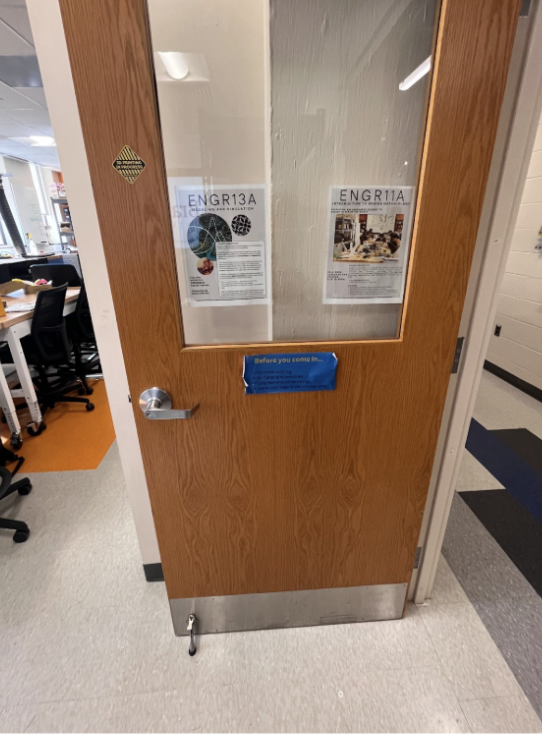
This is the door to our Engineering classroom. Due to a lack of clear information indicating that the door locks automatically when closed, the author accidentally left her bag and laptop inside the classroom. Without authorized access to the room, she had to contact campus safety to unlock the door and retrieve her belongings.😢
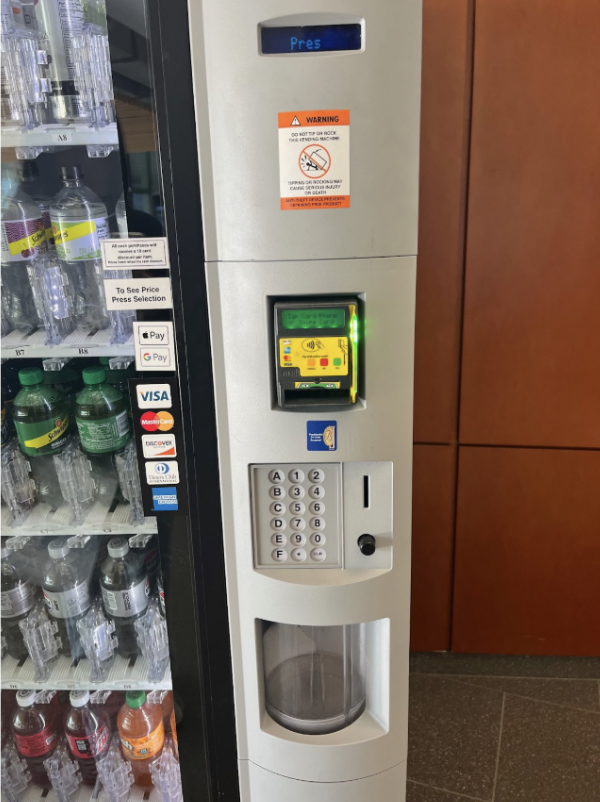
This vending machine's small buttons are challenging for individuals with limited finger dexterity or mobility. If someone has impaired hand function or difficulty pressing small buttons, they have to ask for other's help.
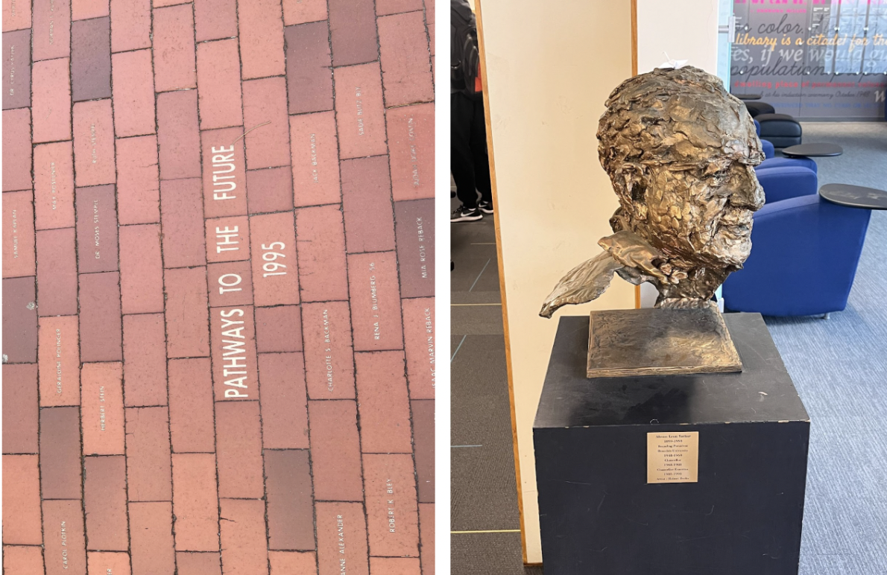
The brick pathway engraved with "Pathways to the Future 1995" and the commemorative bust showcase evidence of design for historical specificity by preserving and honoring moments, individuals, and contributions tied to a specific era or context. These designs serve as enduring reminders of the past, connecting present-day users to historical events and achievements.
10.1. The green roof demonstrates a commitment to environmental sustainability by reducing heat absorption, improving insulation, and promoting biodiversity in urban areas.
10.2. "Turn off the lights" encourages energy conservation by reminding users to reduce electricity consumption when lights are not in use.
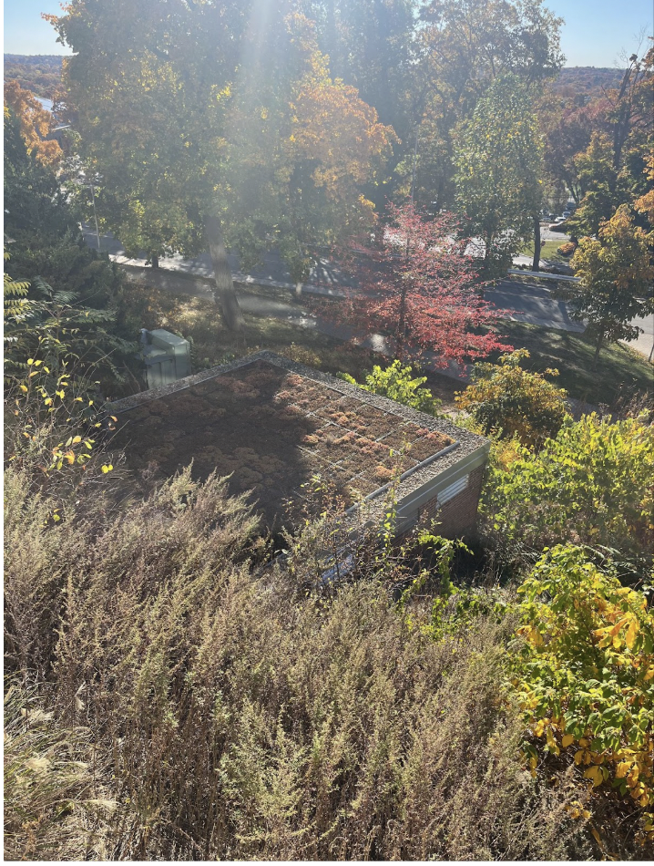
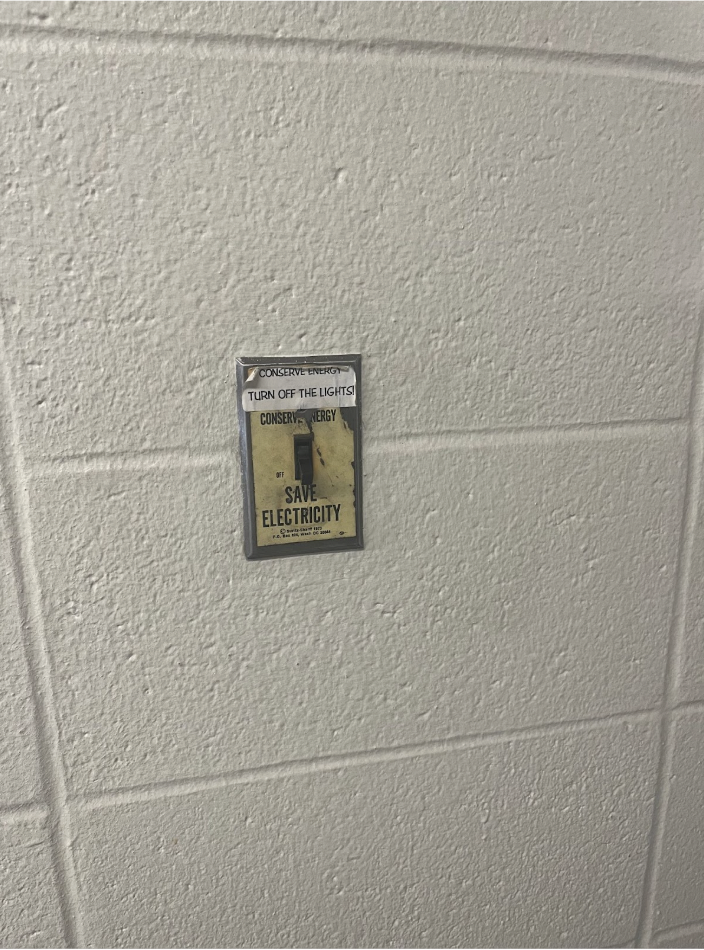
11.1. The hand sanitizer dispenser promotes health and well-being by encouraging proper hygiene and reducing the spread of germs, especially in shared spaces.
11.2. The eye wash station ensures safety by providing immediate relief in case of chemical exposure or debris in the eyes, prioritizing the well-being of individuals in potentially hazardous environments.
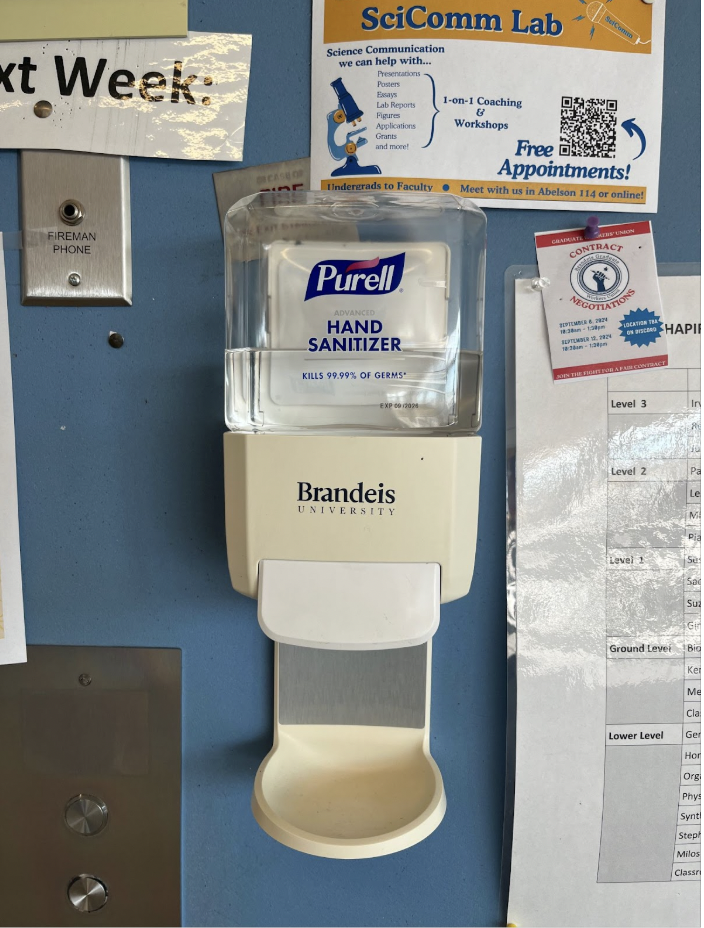
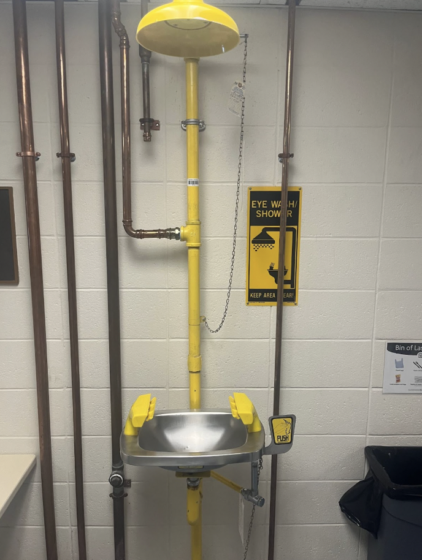